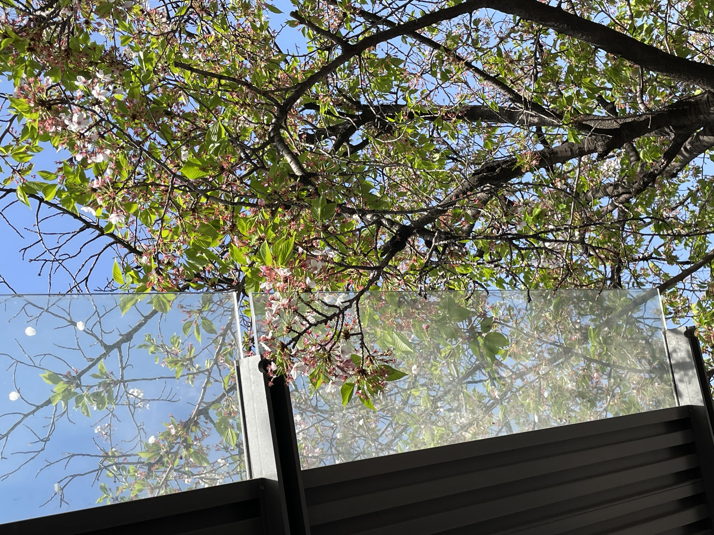

We're all in here!
안녕하세요! 인터넷기초 강의를 수강하고 있는 컴퓨터공학전공 장은선 학생입니다.
월트 디즈니 픽처스와 픽사 애니메이션 스튜디오가 공동 제작한 애니메이션 영화 <인사이드 아웃>에서는 주인공의 다양한 감정을 각각의 캐릭터로 표현합니다.
이에 영감을 받아, 제 안의 다양한 자아를 직업에 비유해 자기소개를 진행해보고자 합니다.
상단에 위치한 네비게이션 링크를 통해 각 자아에 대한 설명을 확인하실 수 있습니다.
안녕하세요! 인터넷기초 강의를 수강하고 있는 컴퓨터공학전공 장은선 학생입니다.
월트 디즈니 픽처스와 픽사 애니메이션 스튜디오가 공동 제작한 애니메이션 영화 <인사이드 아웃>에서는 주인공의 다양한 감정을 각각의 캐릭터로 표현합니다.
이에 영감을 받아, 제 안의 다양한 자아를 직업에 비유해 자기소개를 진행해보고자 합니다.
상단에 위치한 네비게이션 링크를 통해 각 자아에 대한 설명을 확인하실 수 있습니다.